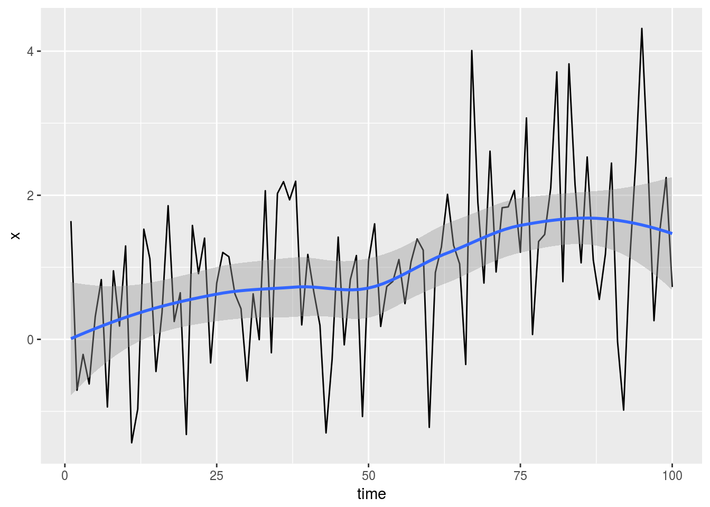
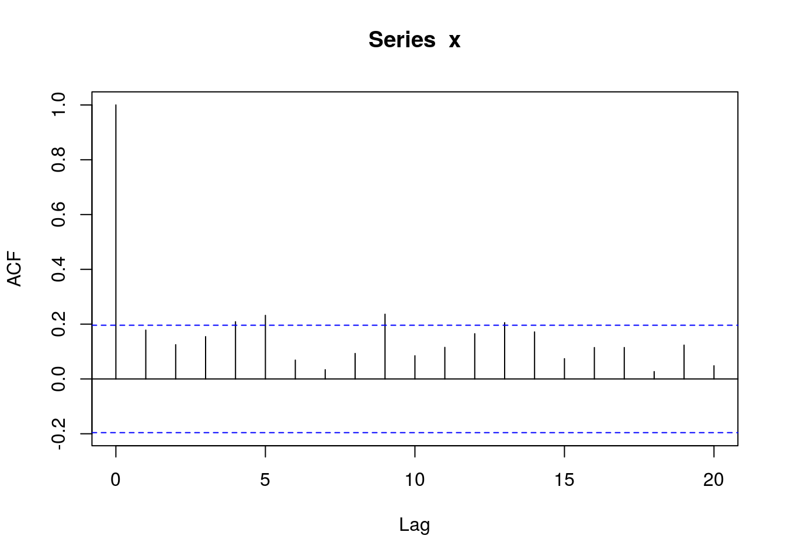
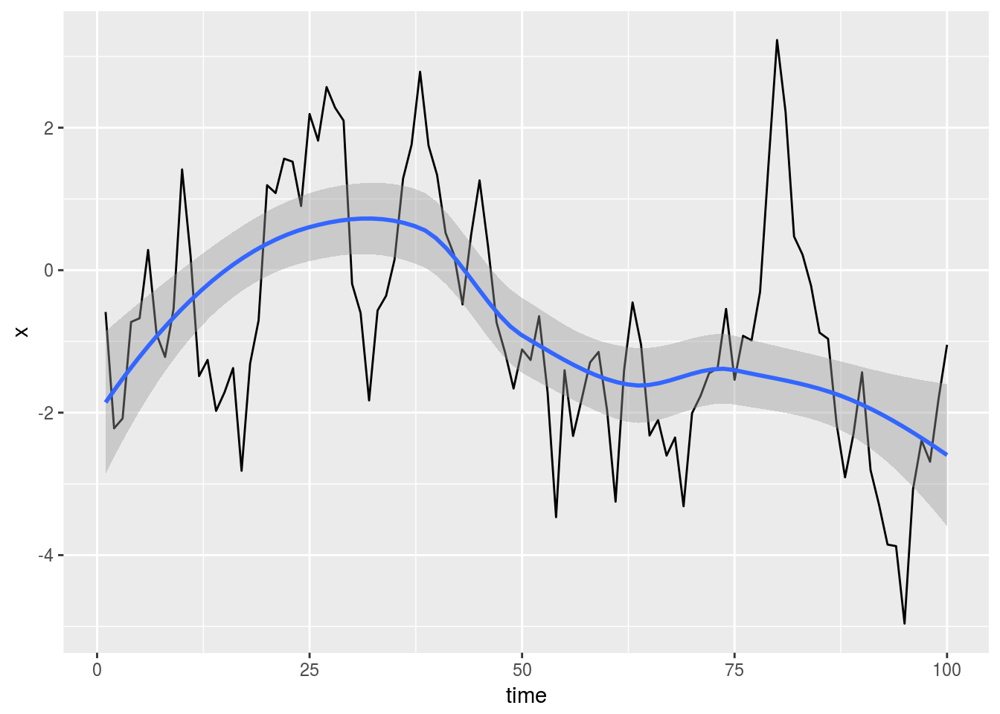
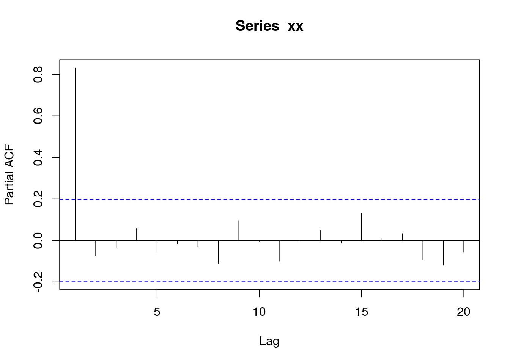
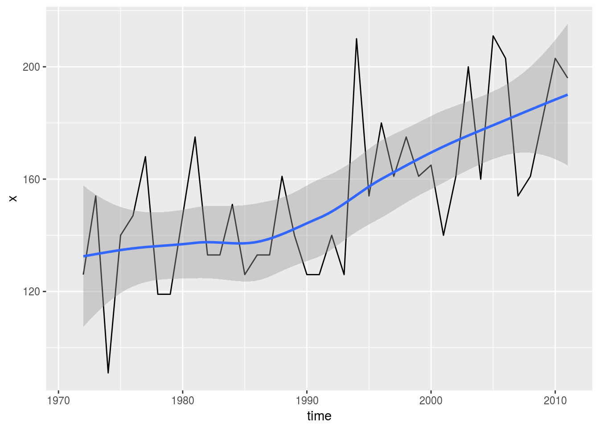
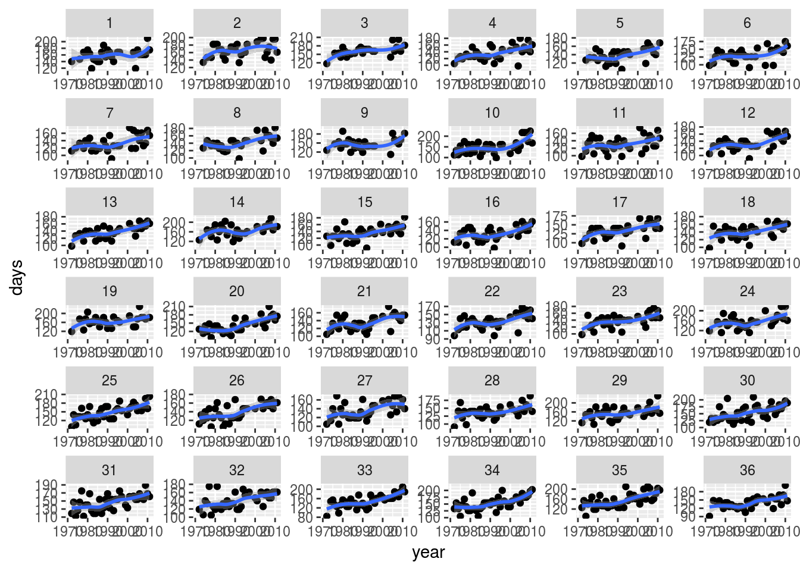

Testing for time trend
Introduction
One of the things my environmental science colleagues spend much of their time doing is assessing whether something is changing over time. Most commonly, the depressing conclusion from one of their investigations is “climate change”. One of the studies I was part of concerned temporal trends in sea ice in Hudson Bay. We will see some of that data later on.
There are two major tools that environmental scientists typically use to assess trend:
- the Mann-Kendall correlation, which is the Kendall correlation of the series with time. The advantage of using the nonparametric Kendall correlation is that climate-type data often has outliers and other strangeness that would affect the Pearson correlation (which assumes normality). This comes naturally with a test that the Mann-Kendall correlation is zero; if this null hypothesis is rejected, we infer a trend, up or down.
- the Theil-Sen slope. This is the median of the pair-wise slopes between all the (pairs of) observations in the series. This, like the Mann-Kendall correlation, is nonparametric, and because of the use of the median, is not unduly affected by outliers. In the presence of a significant Mann-Kendall correlation, the Theil-Sen slope is used as a descriptive statistic, to allow the reader to assess the rate of change, given that there is one.
The null distribution of the Mann-Kendall statistic is well known, and there is no difficulty with the test. Or at least there wouldn’t be if the series had no autocorrelation. Natural series often have positive autocorrelation (that is, if one value is above the mean, the next value is also more likely to be above the mean).
The impatient among you may like to jump ahead to the pictures, or the Jenny Bryan-inspired group_by and do below that.
Adjusting the Mann-Kendall test to account for autocorrelation
Unfortunately, in a series with positive autocorrelation, the P-value of the Mann-Kendall test, calculated the standard way, is too low: it rejects the Mann-Kendall correlation being zero more often than it should, and thus will falsely declare there to be a time trend, when there is none, more often than it should.
Hamed and Rao wrote a paper in Journal of Hydrology vol. 204 (1998), pages 182–196. in which they propose an adjustment to the Mann-Kendall test. This takes the form of obtaining an “adjusted sample size” to account for the autocorrelation (the adjusted sample size is smaller when the autocorrelation is positive); the P-value for the Mann-Kendall test is calculated as if the sample size were the adjusted value (rather than the actual sample size). The calculation produces a sample size ratio, which is 1 if no adjustment is needed, greater than 1 in the case of positive autocorrelation (so the effective sample size is smaller), and less than one in the presence of negative autocorrelation.
This has been implemented in a hard-to-find and no-longer-maintained package called fume, which also seems to have trouble with long series. I decided to re-implement the Hamed-Rao correction in a bare-bones way (that didn’t calculate anything unnecessary), which is in a package mkac on GitHub. This package can be installed in R the usual way, via devtools::install_github.
Examples using simulated data
First, the packages we need:
library(tidyverse)## ── Attaching packages ─────────────────────────────────────────────────────────────────────────── tidyverse 1.2.1 ──## ✔ ggplot2 2.2.1.9000 ✔ purrr 0.2.4
## ✔ tibble 1.4.2 ✔ dplyr 0.7.4
## ✔ tidyr 0.8.0 ✔ stringr 1.3.0
## ✔ readr 1.1.1 ✔ forcats 0.3.0## ── Conflicts ────────────────────────────────────────────────────────────────────────────── tidyverse_conflicts() ──
## ✖ dplyr::filter() masks stats::filter()
## ✖ dplyr::lag() masks stats::lag()library(mkac)## Warning: replacing previous import 'forecast::autolayer' by
## 'ggplot2::autolayer' when loading 'mkac'I generated some random series, using set.seed to make them reproducible. The first series is of independent observations (so there should be no autocorrelation) with an actual trend, so that Mann-Kendall should reject:
set.seed(457299)
z=rnorm(100)
x=z+0.02*(1:100)mkac includes a function ts_plot that plots a time series with the points joined by lines and with a smooth trend. It has an optional second argument, which is the time as stored in another variable, but defaults to 1 through the length of the series:
ts_plot(x)## `geom_smooth()` using method = 'loess' and formula 'y ~ x'
The upward trend is apparent. The lack of autocorrelation shows up in successive observations sometimes being on the same side of the smooth trend and sometimes on opposite sides. Time series aficionados would look at an acf plot (the AutoCorrelation Function):
acf(x)
The thing to look for in the ACF is spikes at lags greater than zero that go further beyond the blue dotted lines than you would expect by chance. A few of them creep beyond significance, but nothing there appears more than chance.
The function in mkac that tests for trend is called kendall_Z_adjusted:
kendall_Z_adjusted(x)## $z
## [1] 4.17532
##
## $z_star
## [1] 4.17532
##
## $ratio
## [1] 1
##
## $P_value
## [1] 2.975678e-05
##
## $P_value_adj
## [1] 2.975678e-05This produces five things. The one to look at first is the third one, called ratio. Here this is 1, meaning that no adjustment for autocorrelation is needed (as we might have guessed). The (Mann-)Kendall correlation has an approximate normal distribution under the null hypothesis of no trend. The value z at the top is the unadjusted test statistic and the value z_star is the adjusted one. There was no adjustment here, so these are the same. At the bottom are the unadjusted and adjusted P-values; these are also the same and strongly significant, so there really is a trend. In practice, you would look at the bottom P-value, but I show both because you might want to know what any autocorrelation did to the P-value.
Having found a trend here, we might want to know how big it is. mkac has a function theil_sen_slope for this purpose:
theil_sen_slope(x)## [1] 0.01650752An increase in the series of 0.0165 per unit time step. We simulated the series to have an increase of 0.02 per time step, so this is not bad.
Our second example is a series generated to have autocorrelation:
set.seed(457298)
xx=arima.sim(list(ar=0.8),100) Let’s look at a plot:
ts_plot(xx)## Don't know how to automatically pick scale for object of type ts. Defaulting to continuous.## `geom_smooth()` using method = 'loess' and formula 'y ~ x'
This is autocorrelated: if it’s above the smooth trend, it’s more likely than not to stay there, and likewise below. Note the long “excursions” above and below the trend. We ought to be able to see the lag-1 autocorrelation that we built into the series. This was an AR series, so the appropriate plot is of the partial autocorrelation function:
pacf(xx)
The big spike is at lag 1, so we infer that we have an AR(1) series, which is what we generated.
This series was generated with no trend. What does the Mann-Kendall test say?
kendall_Z_adjusted(xx)## $z
## [1] -3.978764
##
## $z_star
## [1] -1.710086
##
## $ratio
## [1] 5.413277
##
## $P_value
## [1] 6.927445e-05
##
## $P_value_adj
## [1] 0.08724989If we had not done the adjustment for autocorrelation, we would have mistakenly concluded that there was a trend, with a very small P-value. But by looking at the adjusted P-value of 0.087, we correctly conclude that there is no trend (at significance level 0.05). The big difference lies in the ratio: the autocorrelation was so strong that we had an “effective sample size” more than 5 times smaller than the actual sample size. The test statistic was more than \(\sqrt{5} \simeq 2\) times smaller, leading to a big change in P-value.
If you look at the time plot of the series, it looks like a downward trend (at least after the first few observations), which is probably what the unadjusted test was reacting to, but in fact the trend is all because of the autocorrelation, so it was vitally important to adjust for the autocorrelation before concluding anything.
Having concluded that there was no trend, we should not look at the Theil-Sen slope here, it being, by implication, not significantly different from zero.
Ice-free in Hudson Bay: some real data
Hudson Bay, in northern Canada, is a large inland sea. It freezes over in the winter and thaws in the spring. Gagnon and Goughin Arctic vol. 58 (2005), pages 370–382. studied time trends of ice breakup and freezeup at 36 locations across Hudson Bay. This work was extended by Slawomir Kowalin Theoretical and Applied Climatology vol. 127 (2017) pages 753–760, whose data I borrow here. Kowal also studied the “ice-free period”, the time each year that a location in Hudson Bay has no ice, between spring thaw and winter freeze. An increase in ice-free period over time means that the thaw is getting earlier and/or the freezeup is getting later in the year. This would be indicative of climate change. The data cover 40 years (from 1971–2010) at each of 36 locations. There are some missing data.
The data came to me as a .csv with the values separated by semicolons and the missing values indicated by ., SAS-style. This meant that I needed to use read_csv2 from readr and handle the missing values properly:
icefree=read_csv2("/home/ken/icefree.csv",na=".")## Using ',' as decimal and '.' as grouping mark. Use read_delim() for more control.## Warning: Missing column names filled in: 'X1' [1]## Parsed with column specification:
## cols(
## .default = col_integer()
## )## See spec(...) for full column specifications.icefree## # A tibble: 41 x 37
## X1 `1` `2` `3` `4` `5` `6` `7` `8` `9` `10` `11`
## <int> <int> <int> <int> <int> <int> <int> <int> <int> <int> <int> <int>
## 1 1971 NA NA NA NA NA NA NA NA NA NA NA
## 2 1972 140 NA 117 105 NA 98 112 NA 126 112 98
## 3 1973 NA NA NA NA NA NA NA NA NA 133 NA
## 4 1974 NA 134 NA 120 127 105 120 127 NA 113 112
## 5 1975 NA NA NA 126 NA 126 NA NA NA 154 133
## 6 1976 147 147 154 119 133 147 133 147 147 126 140
## 7 1977 NA NA NA NA NA NA NA NA NA 175 154
## 8 1978 168 147 154 133 133 140 119 133 154 119 105
## 9 1979 168 182 140 126 154 126 140 140 133 161 147
## 10 1980 175 182 175 126 126 126 133 133 189 119 126
## # ... with 31 more rows, and 25 more variables: `12` <int>, `13` <int>,
## # `14` <int>, `15` <int>, `16` <int>, `17` <int>, `18` <int>,
## # `19` <int>, `20` <int>, `21` <int>, `22` <int>, `23` <int>,
## # `24` <int>, `25` <int>, `26` <int>, `27` <int>, `28` <int>,
## # `29` <int>, `30` <int>, `31` <int>, `32` <int>, `33` <int>,
## # `34` <int>, `35` <int>, `36` <int>The locations are in numbered columns. Because of the way the readr functions work, these are not converted into “legal” column names (by affixing an X), so we would need to refer to them with backticks. The first column, X1, is the year. The data values are in days.
Since there are 36 columns that are all numbers of days, the data frame is not tidy. We should gather together the columns for the different locations, thus, and turn the text locations into numeric ones:
icefree_2 <- icefree %>% gather(location,days,-1) %>%
rename(year=X1) %>%
mutate(location=as.integer(location))
icefree_2## # A tibble: 1,476 x 3
## year location days
## <int> <int> <int>
## 1 1971 1 NA
## 2 1972 1 140
## 3 1973 1 NA
## 4 1974 1 NA
## 5 1975 1 NA
## 6 1976 1 147
## 7 1977 1 NA
## 8 1978 1 168
## 9 1979 1 168
## 10 1980 1 175
## # ... with 1,466 more rowsThere are now lots of rows, since we have location 1 for all the years, then location 2 for all the years, and so on.
Just how many missing values do we have at each location? The tidyverse way to find out is to write a little function to count the number of missings in some column x, thus:
nmiss=function(x) {
sum(is.na(x))
}and then use it in a group-by and summarize. knitr::kable produces a nicely-formatted table:
icefree_2 %>% group_by(location) %>%
summarize(missing=nmiss(days)) %>%
knitr::kable(align="rr")| location | missing |
|---|---|
| 1 | 12 |
| 2 | 12 |
| 3 | 16 |
| 4 | 8 |
| 5 | 13 |
| 6 | 8 |
| 7 | 10 |
| 8 | 12 |
| 9 | 15 |
| 10 | 6 |
| 11 | 7 |
| 12 | 8 |
| 13 | 11 |
| 14 | 14 |
| 15 | 6 |
| 16 | 7 |
| 17 | 8 |
| 18 | 9 |
| 19 | 13 |
| 20 | 7 |
| 21 | 7 |
| 22 | 7 |
| 23 | 9 |
| 24 | 10 |
| 25 | 3 |
| 26 | 6 |
| 27 | 7 |
| 28 | 6 |
| 29 | 9 |
| 30 | 2 |
| 31 | 3 |
| 32 | 5 |
| 33 | 4 |
| 34 | 3 |
| 35 | 1 |
| 36 | 6 |
There are rather a lot of missings. Let’s start with location 35 that has fewest missings:
y <- icefree_2 %>% filter(location==35)
y## # A tibble: 41 x 3
## year location days
## <int> <int> <int>
## 1 1971 35 NA
## 2 1972 35 126
## 3 1973 35 154
## 4 1974 35 91
## 5 1975 35 140
## 6 1976 35 147
## 7 1977 35 168
## 8 1978 35 119
## 9 1979 35 119
## 10 1980 35 147
## # ... with 31 more rowsFirst, let’s plot against time. ts_plot has an optional second argument that is the actual time, year here:
with(y,ts_plot(days,year))## `geom_smooth()` using method = 'loess' and formula 'y ~ x'## Warning: Removed 1 rows containing non-finite values (stat_smooth).## Warning: Removed 1 rows containing missing values (geom_path).
There is no special evidence of autocorrelation here: sometimes it stays one side of the trend, sometimes it jumps across. But there is definitely a trend. If we test this for trend, the adjustment for autocorrelation should be small, and the trend should be real:
kendall_Z_adjusted(y$days)## $z
## [1] 3.996305
##
## $z_star
## [1] 3.996305
##
## $ratio
## [1] 1
##
## $P_value
## [1] 6.433887e-05
##
## $P_value_adj
## [1] 6.433887e-05There is definitely a trend there, and no autocorrelation worth bothering with at all. We would next think about finding the Theil-Sen slope, which will be thrown off by the one missing value:
theil_sen_slope(y$days)## [1] NAand that tells me I have to remove the missing values from the input first. That, unfortunately, will throw off the years, because one of them will be missing too, and that should be figured in the input. This means that I have to rewrite the Theil-Sen slope function to accept a time as input. Later.
Here’s how to look at the sample-size ratio and unadjusted and adjusted P-values for all the locations. The technique is group_by and do, gleaned from http://stat545.com/block023_dplyr-do.html. The idea is that the group_by implicitly creates mini-data-frames one for each location, and the do runs kendall_Z_adjusted on each of these. This creates a thing called a list-column (test), from which we then extract via the mutates the things we want:
icefree_2 %>% group_by(location) %>%
do(test=kendall_Z_adjusted(.$days)) %>%
mutate(ratio=test$ratio,pval=test$P_value,padj=test$P_value_adj) %>%
select(-test) %>%
knitr::kable(align="rrrr")| location | ratio | pval | padj |
|---|---|---|---|
| 1 | 1.0000000 | 0.1651076 | 0.1651076 |
| 2 | 0.3210231 | 0.1286611 | 0.0073256 |
| 3 | 1.0000000 | 0.0043815 | 0.0043815 |
| 4 | 1.0000000 | 0.0043586 | 0.0043586 |
| 5 | 1.0000000 | 0.0219197 | 0.0219197 |
| 6 | 0.8520634 | 0.0073505 | 0.0036852 |
| 7 | 0.2753018 | 0.0237888 | 0.0000165 |
| 8 | 1.0000000 | 0.0046190 | 0.0046190 |
| 9 | 1.0000000 | 0.2609625 | 0.2609625 |
| 10 | 1.0000000 | 0.0020581 | 0.0020581 |
| 11 | 1.0000000 | 0.0968465 | 0.0968465 |
| 12 | 1.0000000 | 0.0126099 | 0.0126099 |
| 13 | 1.0000000 | 0.0001251 | 0.0001251 |
| 14 | 0.7385787 | 0.0606248 | 0.0290239 |
| 15 | 1.0000000 | 0.0005299 | 0.0005299 |
| 16 | 1.0000000 | 0.0048528 | 0.0048528 |
| 17 | 1.0000000 | 0.0013397 | 0.0013397 |
| 18 | 1.0000000 | 0.0082107 | 0.0082107 |
| 19 | 1.0000000 | 0.1139875 | 0.1139875 |
| 20 | 1.0000000 | 0.0001567 | 0.0001567 |
| 21 | 1.0000000 | 0.0069747 | 0.0069747 |
| 22 | 1.0000000 | 0.0031771 | 0.0031771 |
| 23 | 1.0000000 | 0.0024256 | 0.0024256 |
| 24 | 1.0000000 | 0.0137212 | 0.0137212 |
| 25 | 1.0000000 | 0.0000674 | 0.0000674 |
| 26 | 1.0000000 | 0.0001496 | 0.0001496 |
| 27 | 1.0000000 | 0.0026180 | 0.0026180 |
| 28 | 1.0000000 | 0.0198572 | 0.0198572 |
| 29 | 1.4844678 | 0.0274234 | 0.0702759 |
| 30 | 1.0000000 | 0.0002356 | 0.0002356 |
| 31 | 1.0000000 | 0.0002665 | 0.0002665 |
| 32 | 1.0000000 | 0.0018992 | 0.0018992 |
| 33 | 0.8028708 | 0.0000111 | 0.0000009 |
| 34 | 1.0000000 | 0.0000316 | 0.0000316 |
| 35 | 1.0000000 | 0.0000643 | 0.0000643 |
| 36 | 1.0000000 | 0.0034391 | 0.0034391 |
Location 29 has a little positive autocorrelation. It isn’t large, but it’s enough to turn an apparently significant trend into a non-significant one.
On the other hand, location 2 has a very negative autocorrelation. This turns a non-significant trend into a strongly significant one.
Perhaps the most distressing conclusion here is that those adjusted P-values are mostly so small. At most of the locations, there is a significant trend in ice-free period. We finish with a plot:
ggplot(icefree_2,aes(x=year,y=days))+geom_point()+geom_smooth()+facet_wrap(~location,scales="free")## `geom_smooth()` using method = 'loess' and formula 'y ~ x'## Warning: Removed 290 rows containing non-finite values (stat_smooth).## Warning: Removed 290 rows containing missing values (geom_point).
That’s a whole lot of upward trends, that the test ensures us are not just chance.